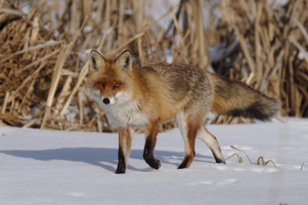
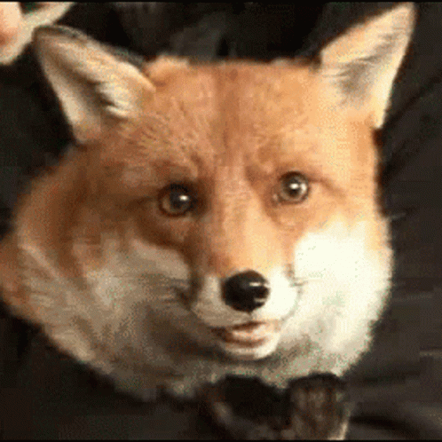

Lis należy do rodziny psowatych, jest więc krewnym psa domowego i wilka. Osiąga do 90 cm długości ciała (plus ok. 60 cm ogona), 35-50 cm wysokości i do 14 kg wagi; samce są nieco większe od samic. Występuje w całej Polsce, Europie, Azji i Ameryce Północnej, a jako inwazyjny gatunek obcy - także w Australii. Jest bardzo wszechstronny siedliskowo: zamieszkuje lasy, łąki, pola i nieużytki, a także miasta i wsie. Schronienia szuka w norach własnego wykopu, w norach borsuków (z osobnym wejściem), wypróchniałych pniach, piwnicach czy opuszczonych budynkach.
| Dorosłe lisy linieją raz w roku - wiosną gęste zimowe futro zastępują cieńsze, rzadsze włosy, przez co zwierzę wydaje się chudsze. W miarę zbliżania się jesieni futro stopniowo gęstnieje i szarzeje, co poprawia kamuflaż lisa. |
 |
| Lis poluje przede wszystkim na gryzonie - głównie norniki, których każdy osobnik łapie średnio 2700 rocznie. Pisk gryzonia słyszy z 150 m, po czym wybija się w górę i spada na ofiarę. Jego łupem padają też zające, króliki, krety, ptaki, duże owady i ślimaki, a nawet nowo narodzone sarny i dziki. Nie gardzi kurnikami, śmietnikami ani miskami psów i kotów. Latem uzupełnia dietę owocami leśnymi, zimą - padliną i resztkami po wilkach. |
 |